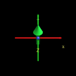
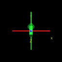
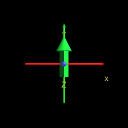
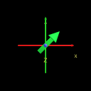
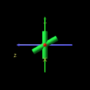
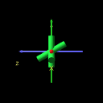
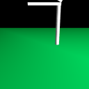

|
|
|
|
|
|
|
| 9 X3D Scenes | Scene Descriptions | |
|---|---|---|
|  | Figure 06.04b Rotation 45x With Axes | Rotating 45 degrees about X axis, with coordinate axes superimposed to show X3D/VRML directions |
|  | Figure 06.05b Rotation - 45x With Axes | Rotating -45 degrees about X axis, with coordinate axes superimposed to show X3D/VRML directions |
|  | Figure 06.06b Rotation 45y With Axes | Rotating 45 degrees about Y axis, with coordinate axes superimposed to show X3D/VRML directions |
|  | Figure 06.07b Rotation - 45z With Axes | Rotating -45 degrees about Z axis, with coordinate axes superimposed to show X3D/VRML directions |
|  | Figure 06.08 Asterisk 3D With Axes | A 3D asterisk created with cylinders built within one vertical and two rotated coordinate systems, with coordinate axes superimposed to show X3D/VRML directions |
|  | Figure 06.09 Triple Asterisk 3D With Axes | A 3-D asterisk ball built with cylinders in rotated coordinate systems, with coordinate axes superimposed to show X3D/VRML directions |
|  | Figure 06.10 Simple Arch | An archway with pieces of the roof built within translated, rotated coordinate systems. Also see Figures 6.10, 7.11 and 12.1 for comparison. |
| Figure 06.11 Desk Lamp Base | The lower arm of a desk lamp, rotated using a center of rotation at the lower end of the arm. See Figures 6.12 and 9.9 for comparison. | |
| Figure 06.1 2Desk Lamp Base Two Arms | The first and second arms of the desk lamp, each rotated using a center of rotation at the lower end of each arm. See Figures 6.11 and 9.9 for comparison. | |
Online at http://www.web3d.org/x3d/content/examples/Vrml2Sourcebook/Chapter06-RotatingShapes
Master source code archive is under subversion control at
http://sourceforge.net/p/x3d/code/HEAD/tree/www.web3d.org/x3d/content/examples/Vrml2Sourcebook/Chapter06-RotatingShapes
|
|
|
|
|
|
Also available: current and archived nightly builds and distributions of these examples, all published under an Open-Source License.
The X3D Resources: Examples page and Savage Developers Guide provide more information about the production of this archive.